Operating Documentation
Direction 5133315-3, Rev# 14
Signa EXCITE HD 1.5T Service Methods
Module Version 2.0, Version Date 3/4/08
Operating Documentation |
| Required Persons | Preliminary Reqs | Procedure | Finalization |
|---|---|---|---|
| 1 | Not Applicable | Not Applicable | Not Applicable |
| Last Updated | 10/01/2007 |
|
| Item | Qty | Effectivity | Part# | Manufacturer | |
|---|---|---|---|---|---|
| Universal Lift Hoist Kit with Gradient Attachments | 1 | - | 46-317266G6, G7, G8, or G9 | - | |
| Phillips-head screwdriver | 1 | - | - | - | |
| Standard flat head screwdriver | 1 | - | - | - | |
| Medium Crescent Wrench | 1 | - | - | - | |
| Digital Multi-meter with high voltage probes | 1 | - | - | - | |
| Item | Qty | Effectivity | Part# | Manufacturer | |
|---|---|---|---|---|---|
| HFD Assembly (weighs 180 lbs/82 kg) | 1 | Forward Production Excite HD, Forward Production Excite HDx | 2393906-4 | - | |
| HFD-S Assembly (weighs 180 lbs/82 kg) | 1 | Upgraded 3T94 (E2), Upgraded Excite HD, Upgraded Excite HDx Systems | 5189221-2 | - | |
| ||||
| FATAL ELECTRIC SHOCK HAZARD. | ||||
| POSSIBLE 800 VOLTS ON CAPACITORS. | ||||
| WAIT AT LEAST 5 MINUTES AFTER UNIT HAS BEEN TURNED OFF BEFORE SERVICING. TO PREVENT FATAL ELECTRIC SHOCK, DISCONNECT POWER FROM THE PDU BEFORE YOU PERFORM THE FOLLOWING PROCEDURES. PERFORM LOCKOUT / TAGOUT PROCEDURE. |
| ||||
| POSSIBLE PERSONAL INJURY. | ||||
| CABINET TIP HAZARD. | ||||
| CONFIRM THAT THE ALUMINUM ANTI-TIP LEGS STORED IN THE REAR OF THE CABINET ARE INSTALLED ON EITHER SIDE OF THE BASE OF THE CABINET BEFORE ATTEMPTING TO REMOVE AN Amplifier. |
| ||||
| Possible Personal Injury. | ||||
| Heavy Object - The amplifier with Case weighs 240 pounds/ 109 KG. | ||||
| Assistance to lift this product (mechanical or Additional Personnel) is required. |
| ||||
| FATAL ELECTRIC SHOCK HAZARD. | ||||
| POSSIBLE 800 VOLTS ON CAPACITORS. | ||||
| WAIT AT LEAST 5 MINUTES AFTER UNIT HAS BEEN TURNED OFF BEFORE SERVICING. TO PREVENT FATAL ELECTRIC SHOCK, DISCONNECT POWER FROM THE PDU BEFORE YOU PERFORM THE FOLLOWING PROCEDURES. PERFORM LOCKOUT / TAGOUT PROCEDURE . |
Power down the Gradient Cabinet by placing the Gradient 208V Control Power Breaker and the Gradient 420 V Power Breaker in the OFF position on the Front Panel of the PDU. See Illustration 1.
Illustration 1: Gradient Cabinet - PDU (Front Cover Removed)
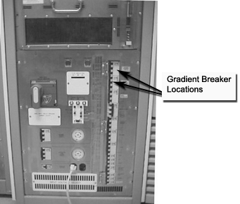
Lock out the breaker panel and tag it.
Wait at least 5 minutes after the Gradient Amplifier has been turned off in order for the power on the capacitors to dissipate.
Verify that all energy has been dissipated. On the terminal block in the rear of the cabinet of the Gradient Amplifier-Power Supply, measure between the ground connection and the incoming power connection at the black wire (see Illustration 2). Repeat this measurement between the ground connection and the red wire, and between the ground connection and the white wire. A measurement of 0 VAC indicates that the 420V incoming power has been successfully removed.
Illustration 2: Verifying Power Removal
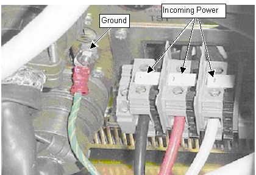
| ||||
| POSSIBLE PERSONAL INJURY. | ||||
| CABINET TIP HAZARD. | ||||
| CONFIRM THAT THE ALUMINUM ANTI-TIP LEGS STORED IN THE REAR OF THE CABINET ARE INSTALLED ON EITHER SIDE OF THE BASE OF THE CABINET BEFORE ATTEMPTING TO REMOVE AN Amplifier. |
Using the screws included with the anti-tip legs, secure the aluminum anti-tip legs to the threaded holes on each side of the base of the Gradient Cabinet. See Illustration 3.
Illustration 3: Installing Anti-Tip Legs On Sides Of Cabinet
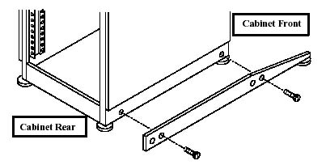
| ||||
| Possible Personal Injury. | ||||
| Heavy Object - The amplifier with Case weighs 240 pounds/ 109 KG. | ||||
| Assistance to lift this product (mechanical or Additional Personnel) is required. |
Locate the three (3) large Steel Rail sections in the Universal Hoist Kit and place them on a flat surface for assembly. See Illustration 4.
Illustration 4: Steel Rail Sections, Hex Bolts, And Hex Nuts
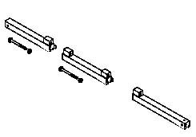
Arrange the rail sections in the proper order (rear, center, then front) and fasten them together with 4.75” X 1/2” caps crews and hex nuts.
Use the crescent wrenches to tighten the cap screws.
Locate the Brass Colored Inner Rail and insert it into the Steel Rails as shown in Illustration 5.
Illustration 5: ASSEMBLED STEEL RAILS AND BRASS-COLORED INNER RAIL
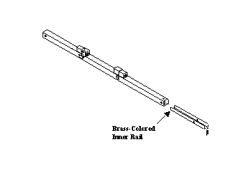
Locate one of two (2) locking pins in the lift kit. Insert one locking pin into the hole near the open end of the rear rail section. This locking pin secures the Brass Colored Inner Rail to the outer Steel Rail. See Illustration 6.
Illustration 6: Rear Steel Rail, Locking Pin, And Brass-Colored Inner Rail
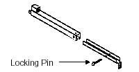
Place the Steel Rail assembly on top of the Fan Enclosure at the top of the Gradient Cabinet. Center the Rail Assembly on the top of the enclosure. SeeIllustration 7.
Illustration 7: Positioning Of The Steel Rail Assembly
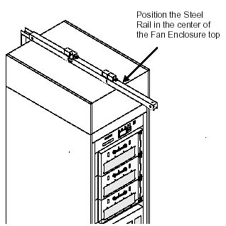
Locate the Brass Colored J-shaped Bracket in the Lift Kit. See Illustration 8.
Illustration 8: J-Shaped Bracket
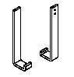
Open the rear door of the Gradient Cabinet. Observe how the J-shaped Bracket fits into the rear door frame. See Illustration 9.
Illustration 9: Positioning Of The J-Shaped Bracket
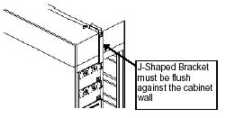
Slide the Rail Assembly toward the front of the Gradient Cabinet. Maintain its centered position.
Attach the J-shaped Bracket to the Brass Colored Inner Rail so that the J-shaped Bracket is flush against the rear panel of the Fan Enclosure. Use the flat Phillips-head screws to secure the J-shaped Bracket to the Brass Colored Inner Rail. SeeIllustration 10.
Illustration 10: Connection Of The J-Shaped Bracket To The Steel Rail Assembly
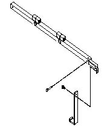
Once the J-Shaped Bracket is secured to the cabinet and the Steel Rail, attach the Saddle Bracket to the top of the Fan Enclosure. The screw holes are located at the front end of the Fan Enclosure. The Saddle Bracket prevents the Steel Rail from sliding from center position. See Illustration 11.
Illustration 11: Positioning And Attachment Of The Saddle Bracket
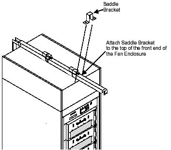
Locate the Hoist Assembly in the Lift Kit. See Illustration 12.
Illustration 12: Hoist Assembly
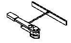
Insert the Hoist Assembly into the open end of the front rail. Insert a locking pin into the holes near the front edge of the front rail. This locking pin prevents the Hoist Assembly from sliding out of the rails. See Illustration 13.
Illustration 13: Placement Of Hoist Assembly Into Front End Of Steel Rail Assembly
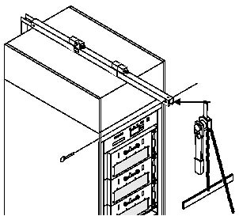
Remove two (2) Phillips-head screws that secure the clear plastic shields covering the high voltage cables at the rear of the Amplifier Assembly.
Use a medium crescent wrench to loosen and remove the brass colored 6/8” hex bolts. The two far right bolts have a knob for the attachment of meter probes.
Remove the two (2) Amplifier cables (J2 & J3). Replace the brass colored bolts to avoid misplacing them.
Unscrew the two, four pin connectors (J1 & J4) and the data cable (J5) from the rear of the Amplifier.
Remove the AC power cord (J6) by loosening the screw on the side of the harness as shown in Illustration 14.
Illustration 14: Removing AC Power Cord
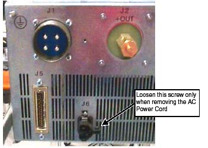
Remove the four (4) Phillips-head screws and washers from the Amplifier front panel, which secure the Amplifier to the Gradient cabinet. See Illustration 15.
Illustration 15: Screws On Amplifier Front Panel
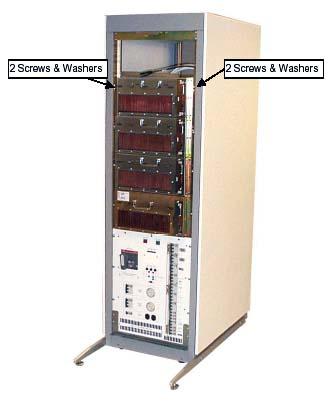
Carefully pull out the Amplifier on its slide and allow the catch to engage.
Remove the two Amplifier brackets from the Universal Hoist Kit. See Illustration 16.
Illustration 16: Gradient Amplifier Hoist Brackets
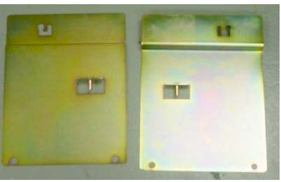
Brackets are labeled left and right. Place the appropriate bracket in the hole that is on the lip of sheet metal on each side of the Amplifier. See Illustration 17.
Illustration 17: Location Of Hoist Bracket Placement Hole
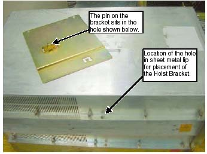
Locate the stabilizer bars in the Hoist Kit. See Illustration 18.
Illustration 18: Location Of Stabilizer Bars In The Hoist Kit
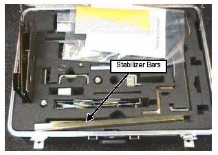
Using four screws from the hoist kit, attach the stabilizer brackets to the bottom of both hoist brackets. See Illustration 19.
Illustration 19: Attaching Stabilizer Bars To Hoist Brackets
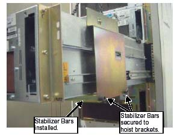
Attach the spreader bar of the hoist assembly to the Amplifier Hoist Brackets. This transfers the weight of the Amplifiers to the hoist. See Illustration 20.
Illustration 20: Attaching The Spreader Bar To The Hoist Brackets
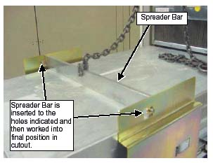
On the Hoist Assembly tighten the chain to the spreader bar to remove slack and support the weight of the Amplifier module. See Illustration 21.
Illustration 21: Transferring Weight To The Hoist Assembly
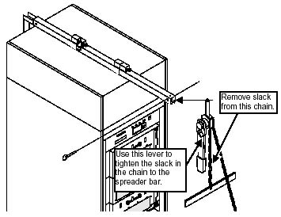
Place the rail lever in the UP position on both sides of the Amplifier module. SeeIllustration 22 for location of lever.
Illustration 22: Rail Lever Location
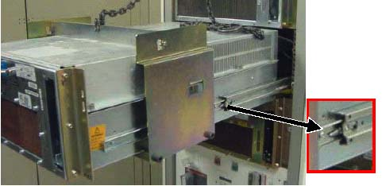
Ensure that the entire weight of the Amplifier is supported.
Face the right side of the module. Slide the module out and remove it from the rails that are attached to the cabinet.
Turn the module to the side and lower the module. See Illustration 23.
Illustration 23: Example Of A Module Turned To Side
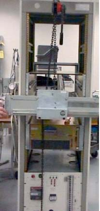
Position the module away from the cabinet so the FRU case can be positioned in front. Disconnect the Hoist Fixture but keep the Lifting Brackets on the module at this time.
Remove the rail from the failed module and set aside. The rails will be attached to the replacement module as follows for the specific axis.
For the X axis: Align slide insert to the bottom holes in the clusters of 3 holes on the right and left sides of the Amplifier. See Illustration 24.
For the Y axis: Align slide insert to the upper holes in the clusters of 3 holes on the right and left sides of the Amplifier. See Illustration 24.
For the Z axis: Align slide insert to the center holes in the cluster of 3 holes on the right and left sides of the Amplifier. See Illustration 24.
Illustration 24: Holes For Rail Placement
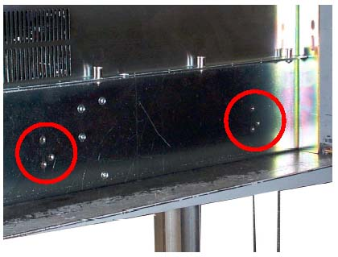
| ||||
| Possible Personal Injury. | ||||
| The amplifier weighs 180 pounds/ 82 KG. | ||||
| THE UNIVERSAL HOIST KIT IS REQUIRED TO REMOVE/REPLACE THE MODULE FROM THE CABINET. |
Position the FRU case in front of the Gradient cabinet. See Illustration 25.
Illustration 25: FRU Case Positioned
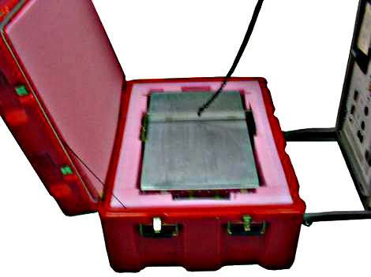
Attach the spreader bar to the hoist brackets.
Start raising the module. The module and case can be positioned on the anti-tip legs when the majority of the weight is taken up by the hoist. See Illustration 26.
Illustration 26: Installing New Assembly
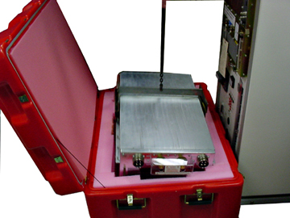
After the unit is above the FRU case, close the case and set the Amplifier on the FRU case top and attach the rail to the side of the amplifier.
For the X axis: Align slide insert to the bottom holes in the clusters of 3 holes on the right and left sides of the Amplifier. See Illustration 24.
For the Y axis: Align slide insert to the upper holes in the clusters of 3 holes on the right and left sides of the Amplifier. See Illustration 24.
For the Z axis: Align slide insert to the center holes in the cluster of 3 holes on the right and left sides of the Amplifier. See Illustration 24.
Fully extend the slide rail in the cabinet of the axis that is being replaced.
Raise the replacement Amplifier using the hoist assembly and move module in position to place rails into the slide mechanism on the cabinet.
Move the slides to the locking position.
Remove the spreader bar from the hoist brackets.
Remove the hoist brackets.
Push the Amplifier assembly all the way into the cabinet.
Secure the assembly to the front panel by replacing the four (4) Phillips-head screws and washers from the Amplifier front panel. See Illustration 27.
Illustration 27: Screws On Amplifier Front Panel
Replace the AC power cord (J6) and secure by tightening the screw on the side of the harness as shown in Illustration 28.
Illustration 28: Securing AC Power Cord
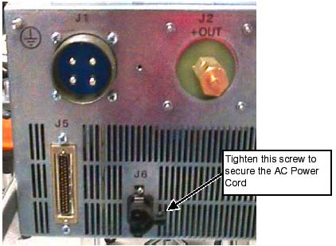
Replace the two, four pin connectors (J1 & J4) and the data cable (J5) at the rear of the Amplifier.
Replace the two (2) Amplifier cables (J2 & J3). Replace the brass colored bolts and tighten with a medium sized crescent wrench.
Replace the clear plastic shields covering the high voltage cables at the rear of the Amplifier Assembly and secure with two (2) Phillips-head screws.
Insert the failed amplifier into the FRU case using the hoist. The extra set of brackets and Stabilizer Bars must be returned with the FRU.
Remove the Universal Hoist from the cabinet and return to the Hoist Kit.
Remove the power lock out tag out to the Gradient Cabinet and restore power.
To adjust DC Offsets, follow the steps on Illustration 29.
Illustration 29: Adjusting DC Offsets
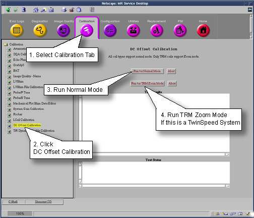
The calibration values are stored in the /usr/g/caldir/gram_tune.dat. file.
| NOTE: | DO NOT touch the offset pots on the Amplifier! |
Check gradient calibration using procedure for Gradient Calibration, calibrate if necessary.